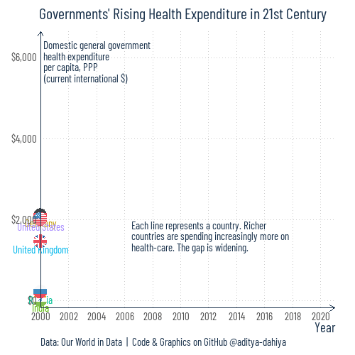

Government Health-Care Expenditure over last 20 years
Animated line plot comparing Public Health Spending per Capita (2000–2021) across countries. Data sourced from World Bank and processed by Our World in Data.
Our World in Data
Public Health
Animation
{gganimate}
Author
Aditya Dahiya
Published
August 11, 2024
Government Health Care Expenditure vs. its Tax Revenue (in different Countries)
This animated line plot compares Public Health Spending per Capita from 2000 to 2021 across various countries. The Y-axis illustrates Public Health Spending per Capita, which includes all recurrent and capital spending from government sources, external borrowing, grants, and social health insurance funds. It is measured in current international dollars, adjusting for price differences between countries. Each line represents a country.
The data for public health spending is sourced from multiple providers, compiled by the World Bank and processed by Our World in Data. The data pipeline includes standardizing country names, converting units, and calculating derived indicators such as per capita measures. For a detailed description of the data processing and links to the original sources, please refer to Our World in Data’s data pipeline documentation and World Bank’s World Development Indicators.

An animated line plot that compares Public Health Spending per Capita from 2000 to 2021 across various countries.
How I made this graphic?
Getting the data
Code
# Data Import and Wrangling Toolslibrary(tidyverse) # All things tidylibrary(owidR) # Get data from Our World in R# Final plot toolslibrary(scales) # Nice Scales for ggplot2library(fontawesome) # Icons display in ggplot2library(ggtext) # Markdown text supportlibrary(showtext) # Display fonts in ggplot2library(colorspace) # To lighten and darken colourslibrary(gganimate) # Animations# Getting the datasearch1 <- owidR::owid_search("health spending")rawdf <-owid(search1[2,1])
# Font for titlesfont_add_google("Acme",family ="title_font") # Font for the captionfont_add_google("Saira Extra Condensed",family ="caption_font") # Font for plot textfont_add_google("Barlow Condensed", family ="body_font")showtext_auto()# Colour Palette# Background Colourbg_col <-"white"text_col <-"#2e5075"text_hil <-"#18304a"# Base Text Sizebts <-80plot_title <-"Tax and Health: Tracking Global Trends"plot_caption <-"Data: Our World in Data | Code & Graphics on GitHub @aditya-dahiya"